Era uma vez três porquinhos que viviam na floresta com a sua mãe. Um dia, como já estavam muito crescidos, decidiram ir viver cada um em sua casa. A mãe concordou, mas avisou-os:
- Tenham muito cuidado, pois na floresta também vive o lobo mau, e eu não vou estar lá para vos proteger…
- Sim mamã! – Responderam os três ao mesmo tempo.
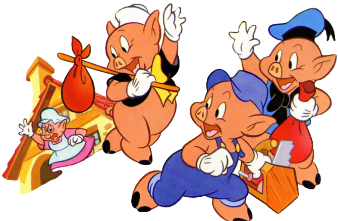
Os porquinhos procuraram um bom lugar para construir as suas casas e, assim que o encontraram, cada um começou a fazer a sua própria casa.
O porquinho mais novo, que só pensava em brincar, fez a sua casa muito rapidamente, usando palha. O porquinho do meio, ansioso por ir brincar com o mais novo, juntou uns paus e depressa construiu uma casa de madeira. O porquinho mais velho, que era o mais ajuizado, lembrou-se do que a sua mãe lhe tinha dito, e disse:
- Vou construir a minha casa de tijolos. Assim terei uma casa muito resistente para me proteger do lobo mau.
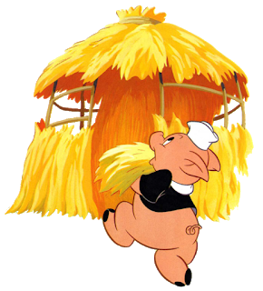 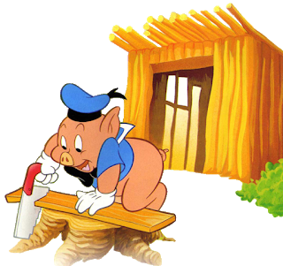 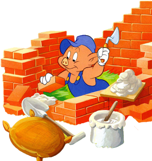
É claro que foi o que demorou mais tempo a construir a casa mas, no fim, estava muito orgulhoso dela, e só aí se juntou aos seus irmãos para brincar.
Um dia andavam os três porquinhos a saltar, muito divertidos, quando aparece o lobo mau:
- Olá! Vejo três deliciosos porquinhos à minha frente.
Ao verem o lobo mau, fugiram, cada um para a sua casa.
O lobo, que estava cheio de fome, chegou ao pé da casa do porquinho mais novo, e disse:
- Cheira-me a porquinho! Sai daí que eu vou-te comer! Se não saíres, deito a tua casa de palha abaixo…
E vendo a casa de palha à sua frente, soprou tão forte, que fez a casinha ir pelo ar!
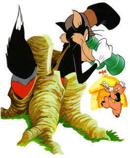 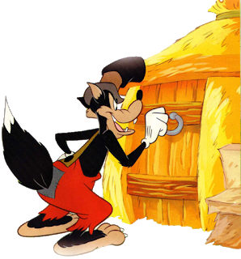 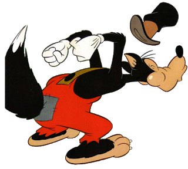 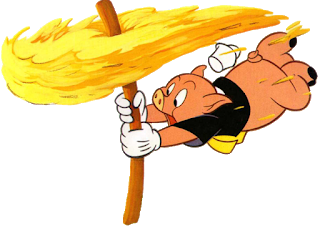
O porquinho assustado correu para a casa do irmão do meio, que tinha uma casa de madeira.
Quando o lobo lá chegou, gritou novamente:
- Cheira-me a porquinho! E eu estou com tanta fome que vos vou comer aos dois…
E com dois sopros, conseguiu deitar a casa de madeira abaixo.
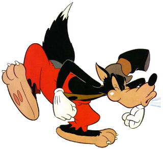 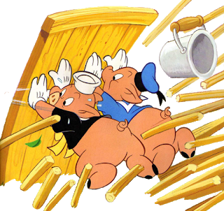
Os dois porquinhos mais novos correram então, apavorados, para a casa do irmão mais velho, que era de tijolo.
O lobo, vendo que os três porquinhos estavam todos numa só casa, exclamou, louco de alegria:
- Cheira-me a porquinho! E mais fome não vou eu ter, pois apanhei três porquinhos para comer!
Então o lobo encheu o peito de ar e soprou com toda a força que tinha, mas a casinha de tijolos não se mexeu nem um bocadinho. Aliviados, os três porquinhos saltaram de contentes. Mas o lobo não desistiu, e disse:
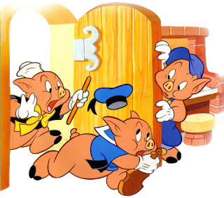 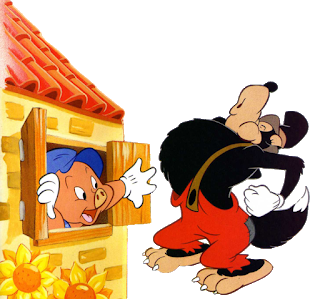 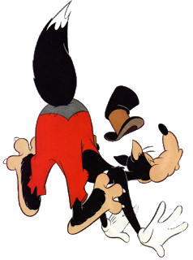
- Não consegui deitar a casa de tijolos abaixo nem derrubar a sua porta mas eu tenho outra ideia… esperem que já vão ver! E começou a subir o telhado, em direcção à chaminé.
Os porquinhos mais novos ficaram aflitos mas o mais velho, que era muito esperto, colocou no fogão, por baixo da chaminé, um grande caldeirão de água a ferver.
O lobo, ao entrar pela chaminé, caiu no caldeirão de água quente e queimou o rabo, fugindo o mais rápido que podia para o meio da floresta. Os dois porquinhos agradeceram ao seu irmão mais velho, e aprenderam a lição.
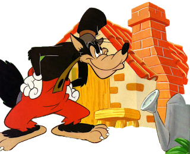 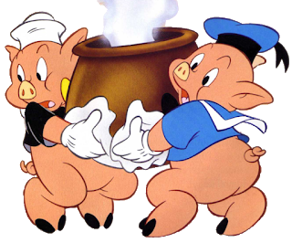 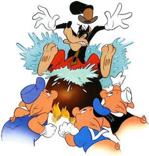
Deste lobo mau, nunca mais se ouviu falar…